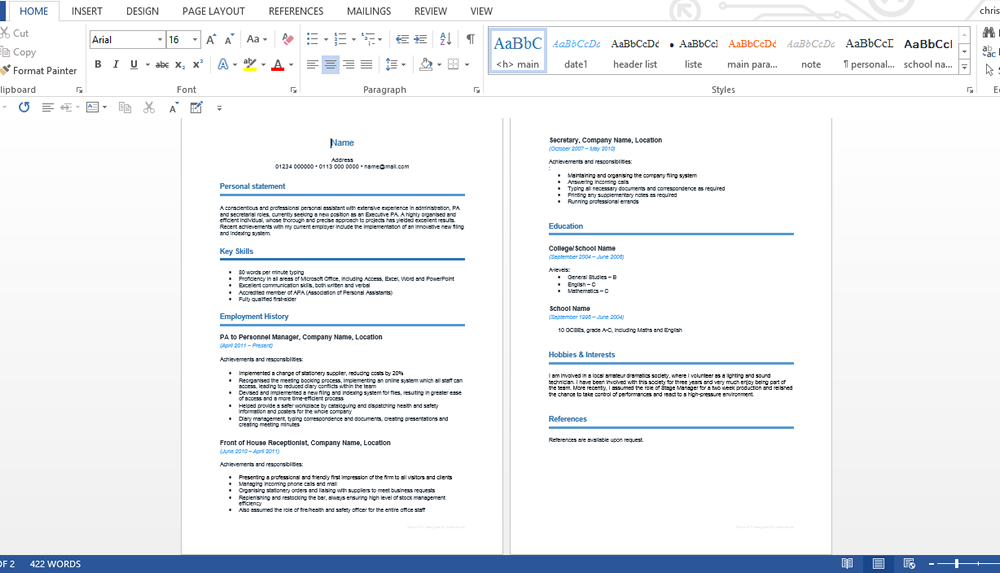
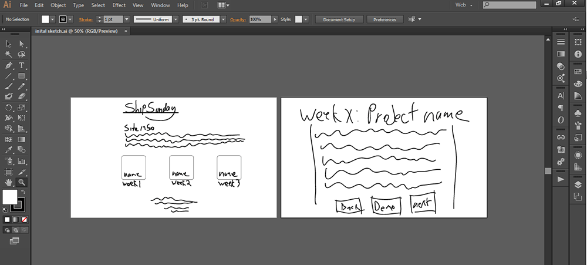

Week 1: Online CV Builder
The Concept
So one thing that I seem to be hearing quite a lot recently is about how most people’s CVs either don't do them justice or are substandard with a lot of missing information (though this may be due to the strange amount of recruiters I have ended up following on Twitter).
I remember when I first put my CV together when I was looking for my first job, it was hard. What do you even put into a CV? Do I just write about what I have done, what I want to do? And what do I need to include that employers need to see such as qualifications and past experience.
I was lucky enough to have an employer and recruiter to help me through this but when looking for recourses online I found an overload of useless information and conflicting opinions on what is needed and I hadn't even started writing yet.
It can be hard.
For this reason I have started a little project to make the process easier. A small online web tool that helps you get started. No more staring at an intimidating blank word document, just type in the information that is needed into the web form, click "build" and watch as it magically created a nicely formatted curriculum vitae!
Background Research
Before starting to build this project I thought I better first look into what is required in a CV, as really I am no expert at all!
I headed over to google to source a few templates.
after digging around a little, this is a typical example of what I found:

Source
I downloaded a few more and looked at what they included. Some templates such as these ones included a little bit of information about what should be included or examples of information that could be put in. I saved this as it could be useful later for hinting at what users should input into the form.
From my research I concluded that the following information is what NEEDS to be included on any CV without a doubt:
-
Personal Information including full name and contact details (Address, mobile number and email)
-
A little information about yourself (Personal statement if you will) and your key skills including key attributes
-
Employment History and a little information about each company and role.
-
Education history including School, Uni and other qualifications
-
Interests and other achievements
-
References
So these are what I have chosen the basic input of the form to be.
Basic Goals
The basic goals of the project:
-
Create an easy to use web app that takes form input and outputs as a styled PDF.
-
Use some design magic to help the user work out what they should be inputting.
-
Verify that the user has completed all required parts of the form before progressing.
-
Present it all in a way where the user understands what is going on.
The Design Process
In order to reach the desired goals it was a quick decision to create the site in a "blog" format, though the word is used loosely!
I roughly sketched up how I wanted the sites home and blog page to look onto my laptop. These sketches gave me a rough idea of how to lay the site out once I moved into code and also made it much less intimidating the staring a blank HTML document.

I downloaded a few more and looked at what they included. Some templates such as these ones included a little but of infomation about what should be included or examples of infomation that could be put in.
Next I got into code as early as possible, the site was so simple that prototyping would have been a waste of time and with frontend frameworks being as great as they are nowadays I tend to prototype in good old HTML and CSS anyway.
Technical Stuff
To start the development of the site I chose to go with a development stack that I was familiar, this did not include a CRM system as I can simply write the text straight into my code editor and it just seemed like a waste of time, this may be something to include later if I continue to write posts.
The frameworks I chose to create the site are as follows:
The website is hosted on a
Digital Ocean droplet that I use for all my projects.
Creating the Site
Creating the site was pretty straight forward after importing all of the frameworks that I needed.
After applying some simple style to make the site look pretty I set to work at writing this post.
As the content for the site needs to be added weekly I didn't actually have a massive amount to add.
For those who are interested in this process, the code is publicly available on github
here
A Short Conclusion
So here it is. You are currently viewing the finished product.
Hopefully I have helped anyone interested in the web design process have a rough idea of how it works thought his may not have been an amazing example.
This post was more useful for me as it enabled me to clarify why I am doing this and once this is finished this means I have definitely started.
Now to get some more interesting projects posted!
To see all projects
click here